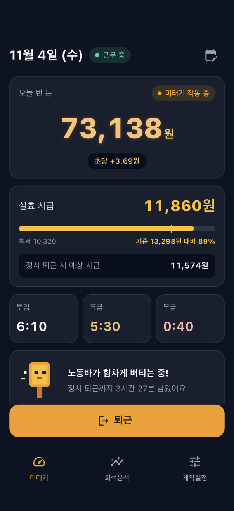
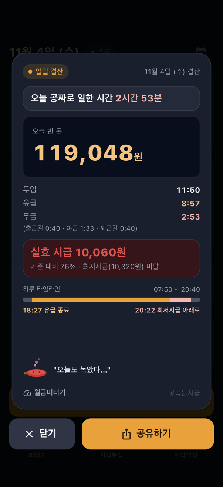
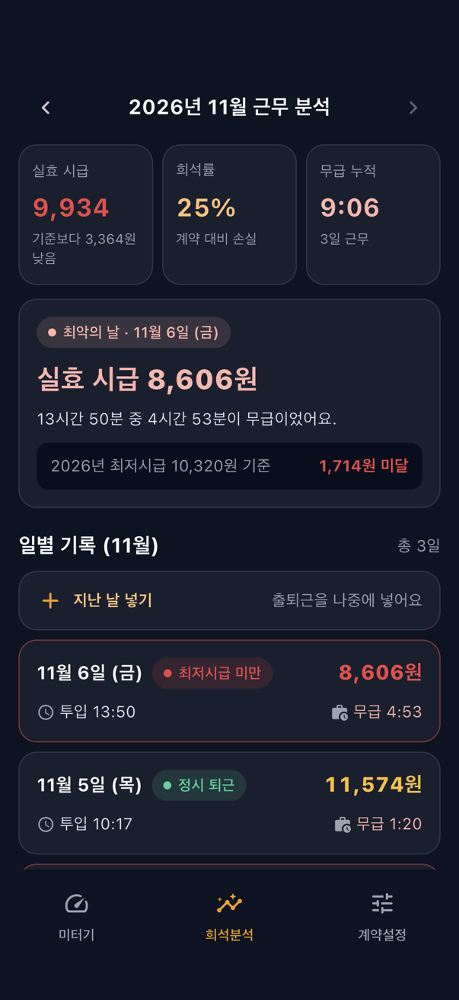

월급미터기
출근길부터 녹는 내 시급. 집을 나서는 순간부터 집에 돌아오는 순간까지를 일한 시간으로 계산합니다.

이런 앱입니다
- 아침에 출근을 누르면 미터기가 돌기 시작합니다. 회사에 도착하면 오늘 번 돈이 초 단위로 올라갑니다.
- 출퇴근 시간까지 넣은 지금 이 순간의 진짜 시급(실효 시급)을 보여 줍니다.
- 포괄임금이라면 소정근로가 끝나는 순간 미터기가 멈추고, 그 뒤로 일하는 시간만큼 시급이 녹아내립니다.
- 하루가 끝나면 무급으로 일한 시간과 실효 시급을 결산 카드로 받습니다. 이미지로 공유할 수 있습니다.
- 출퇴근을 깜빡해도 나중에 넣거나 고칠 수 있고, 한 달 기록은 희석분석에서 모아 봅니다.
- 서버가 없습니다. 급여와 출퇴근 기록은 기기 안에만 저장됩니다.


꼭 알아 두세요
- 앱의 시급은 체감용 계산이며 법적 판단의 근거가 아닙니다. 최저임금 위반 여부는 주휴를 포함한 월 209시간 기준으로 판단하므로 앱의 숫자와 다릅니다.
- 세금은 계산하지 않습니다. 통장 기준이든 계약서 기준이든 아는 금액을 넣으면 됩니다.